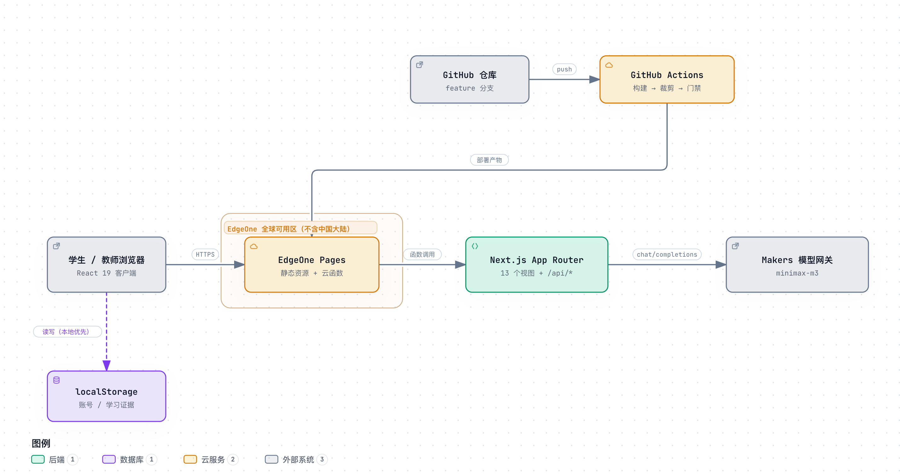
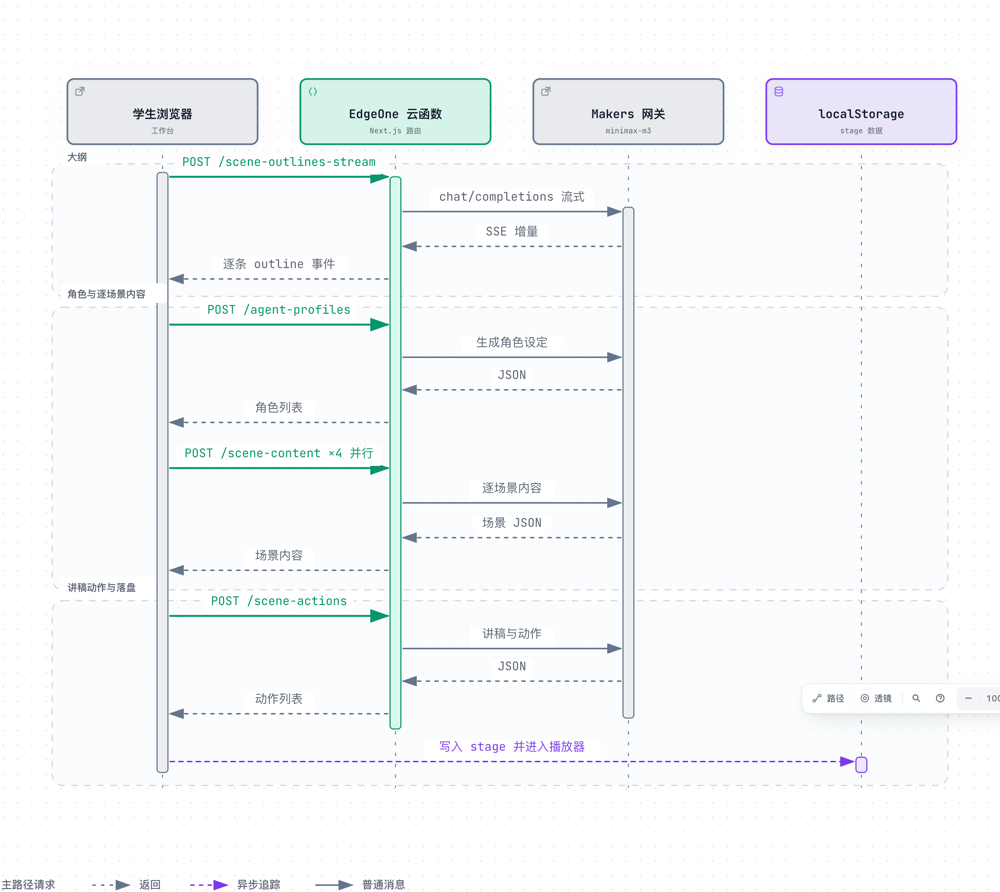

一、项目概述
1.1 建设背景
大学物理是理工科的基础课，课时紧、概念密，学生对抽象模型的掌握程度差异很大。任课教师面对一个班几十名学生，能拿到的信号通常只有作业和期末成绩，中间过程是空白的：谁在哪一章掉队、哪次实验没做、哪道题反复错，往往要到期中之后才浮现。
市面上的教学平台大多解决其中一段：题库解决练，资源库解决看，AI 助手解决问。但课程章节、班级名单、评价标准仍然散落在各个系统里，教师要在几处之间来回切换。本项目把这些环节收进一个工作台，让学生端和教师端共用同一套账号、同一份课程结构和同一条证据链。
1.2 建设目标
系统围绕三个目标建设。
- 把学习过程变成可读的证据。诊断、闯关、实验、问答四类行为都留下记录，按学生聚合，形成可复核的学习报告。
- 让教师保留判断权。AI 给出建议分与建议方向，复核分和理由始终由教师填写，并且覆盖建议值。
- 把备课成本降下来。一句需求即可生成一堂可播放的课，覆盖大纲、讲稿与画面，教师只需调整内容而不必从零排版。
1.3 术语约定
| 术语 | 含义 |
|---|---|
| 视图 | 工作台内的一个功能页面，通过左侧导航切换，对应一个路由。 |
| 场景 | 课堂的最小播放单元，类型包括讲授页、测验、交互仿真与项目任务。 |
| 预置课堂包 | 随系统内置的成品课堂，不依赖网络与模型额度，可直接播放。 |
| 过程证据 | 学生在诊断、闯关、实验、问答中产生的记录，是学习报告的数据来源。 |
| 复核 | 教师对 AI 建议分的确认或改写，必须填写理由。 |
二、需求分析
2.1 用户角色
系统服务两类角色，权限与信息范围不同。
| 角色 | 核心诉求 | 可见范围 |
|---|---|---|
| 学生 | 知道下一步练什么，看到自己的进步 | 本人诊断、项目、任务、实验记录与学习报告 |
| 教师 | 定位风险学生，完成评价复核 | 全班画像、课程矩阵、待复核评价、教学洞察 |
2.2 功能需求
| 模块 | 功能描述 | 优先级 |
|---|---|---|
| 账号与会话 | 注册、登录、退出；角色区分；跨角色访问拦截 | 高 |
| 学情诊断 | 八题前测，输出七维掌握度，作为后续匹配依据 | 高 |
| 项目匹配 | 结合薄弱维度、学习方式与能力目标排序，给出推荐理由 | 高 |
| 任务闯关 | 按项目拆关卡，逐题判分并记录 | 高 |
| 虚拟实验 | 参数可调，现象与读数实时联动，支持测量记录 | 高 |
| AI 助教 | 围绕当前章节问答，回答附引用来源 | 中 |
| 学习报告 | 汇总四类证据，支持导出 | 高 |
| 班级治理 | 风险排序、班级画像、课程矩阵 | 高 |
| 评价复核 | 改分、写理由、导出汇总 | 高 |
| 课堂生成 | 一句需求生成可播放课堂，含大纲、内容、讲稿 | 高 |
| 课堂播放 | 场景切换、讲稿同步、进度控制 | 高 |
2.3 非功能需求
| 维度 | 要求 | 达成方式 |
|---|---|---|
| 响应 | 首屏可读内容在服务端直出，不依赖客户端水合 | 路由静态化，十三个视图预渲染 |
| 可用 | 断网状态下，工作台与预置课堂仍可完整使用 | 数据本地化，模型调用只出现在生成与问答 |
| 安全 | 高耗能接口需登录；凭据不落仓库 | 会话门禁 + 产物泄露门禁 |
| 兼容 | 桌面浏览器 1280 像素以上正常显示 | 响应式栅格与侧栏折叠 |
| 可维护 | 改一处配置不会引发静默降级 | 构建期门禁，配置缺失即失败 |
三、总体设计
3.1 设计原则
四条原则贯穿整个实现。
本地优先。账号、学习记录、生成结果都存在浏览器，服务端不保存业务数据。这样断网可用，也避免了为演示环境准备数据库。代价是换设备不同步，这一点在手册里写明了。
边缘只做代理。云函数负责页面渲染与模型转发，不做业务计算。凡是能在浏览器算完的，不放服务端。
门禁按成本划线。只有会消耗模型额度或上游资源的接口要求登录，其余接口放行。判据是「会不会花钱」，不是「是不是敏感」。
配置缺失即失败。函数超时、加速区域、凭据泄露这三类配置，任何一项不符合预期，构建或部署直接中止，不允许静默降级。
3.2 系统架构

图 1 系统架构：浏览器本地优先，边缘函数承担渲染与模型转发系统分四层。浏览器层是 React 客户端，负责交互与本地存储；边缘层是 EdgeOne Pages，提供静态资源与云函数；应用层是 Next.js 的路由与接口；模型层是 Makers 网关，只接一个模型。
交付侧另有一条独立链路：代码推送到仓库后，由 GitHub Actions 完成构建、裁剪、门禁与上传，与本地部署走同一条流水线。
 图 2 系统首页：需求输入与六个预置课堂包
图 2 系统首页：需求输入与六个预置课堂包
3.3 技术选型
| 层次 | 选型 | 理由 |
|---|---|---|
| 框架 | Next.js 16（App Router） | 路由级静态化与接口同仓，十三个视图可预渲染；服务端组件减少首屏依赖 |
| 视图 | React 19 + Tailwind CSS 4 | 组件复用度高，样式集中在类名，改版成本低 |
| 托管 | EdgeOne Pages | 静态资源与云函数同域，支持自定义域名；可配置函数执行时长 |
| 模型 | Makers 网关 · minimax-m3 | 统一 OpenAI 兼容协议，无需分别对接厂商；单一模型保证输出格式稳定 |
| 存储 | localStorage | 零运维、断网可用；按账号分区即可满足单机演示与课堂使用 |
四、功能设计
4.1 学生端
学生端八个视图按学习顺序排列，左侧导航即是推荐路径。
| 视图 | 解决的问题 | 关键设计 |
|---|---|---|
| 学习总览 | 这一周该做什么 | 把诊断结论、进行中的项目、待办任务收敛到一屏，只给一个下一步入口 |
| 学情诊断 | 薄弱点在哪 | 八题覆盖七个维度，结果以雷达图与列表并列呈现，低于阈值的维度标红 |
| 章节与知识图谱 | 课程如何组织 | 章节、概念、项目三视角切换，概念视角按依赖关系布局 |
| 项目匹配 | 该做哪个项目 | 排序依据为薄弱维度、学习方式、能力目标三项，卡片写明推荐理由 |
| 任务闯关 | 今天练什么 | 项目拆为五阶关卡，逐题提交即时判分，进度本地留存 |
| AI 助教 | 概念怎么理解 | 自动带入当前章节上下文，回答附引用段落 |
| 虚拟实验 | 参数变化的影响 | 滑块驱动模型计算，曲线与读数同步；测量可记录成表 |
| 学习报告 | 阶段性结论 | 四类证据按时间轴汇总，支持导出 Markdown |
 图 3 学生端学习总览：待办入口按优先级只显示一个
图 3 学生端学习总览：待办入口按优先级只显示一个
4.2 教师端
教师端五个视图对应一次完整的治理动作：定位、观察、对照、复核、调整。
| 视图 | 解决的问题 | 关键设计 |
|---|---|---|
| 教学驾驶舱 | 今天关注谁 | 风险学生按连续未完成与掌握度下滑两个信号排序，右侧并列待复核 |
| 班级画像 | 班级整体状态 | 一行一名学生，投入度、完成率、活跃度、风险标记四列，可展开明细 |
| 课程项目矩阵 | 目标与项目是否对齐 | 章节 × 项目矩阵，用于发现无项目覆盖的章节 |
| 评价复核 | 建议分是否采纳 | 复核分与理由为必填，保存后标记已复核，支持整表导出 |
| 教学洞察 | 下一步怎么调 | 以结论形式给出建议，每条附原始数据入口 |
 图 4 教学驾驶舱：风险学生与待办复核并列呈现
图 4 教学驾驶舱：风险学生与待办复核并列呈现
4.3 教学闭环
两侧不是各自独立的模块，而是同一条闭环的两端。学生完成诊断后，画像驱动项目排序；项目拆成关卡，闯关与实验产生的记录汇入学习报告；教师复核评价时看到的就是这条证据链；复核结果与教学洞察再反哺下一轮的项目匹配。
| 环节 | 输入 | 输出 |
|---|---|---|
| 诊断 | 八题作答 | 七维掌握度画像 |
| 匹配 | 画像 + 学习方式 | 带理由的项目排序 |
| 实践 | 项目 + 章节 | 闯关记录、实验测量、问答记录 |
| 汇总 | 四类过程证据 | 学习报告 |
| 复核 | 报告 + 建议分 | 复核分与理由 |
| 反哺 | 复核结果 | 下一轮匹配权重 |
五、关键技术实现
5.1 课堂生成链路
一句需求要变成可播放的课堂，中间有四步：生成大纲、确定角色、逐场景写内容、写讲稿与动作。四步串行，只有逐场景内容这一步内部并行。

图 5 一次生成请求的时序：大纲流式返回，角色与内容随后，最后落盘 图 6 生成结果在播放器中呈现，讲稿随进度高亮
图 6 生成结果在播放器中呈现，讲稿随进度高亮
| 阶段 | 接口 | 实测 |
|---|---|---|
| 课堂大纲 | /api/generate/scene-outlines-stream | 200，78.5 秒，15 个场景，收到完成事件 |
| 智能体角色 | /api/generate/agent-profiles | 200，约 29 秒 |
| 逐场景内容 | /api/generate/scene-content | 200，单场景 60–82 秒 |
| 讲稿与动作 | /api/generate/scene-actions | 200，约 10 秒 |
5.2 并行调度
内容生成是耗时大头，因此做成两阶段流水线：内容按并发预取，按顺序消费。预取与消费之间没有栅栏，第一个场景画出来的时间与串行一致，后续场景的内容在后台已经备好。
| 方式 | 四个场景的耗时 | 总墙钟 |
|---|---|---|
| 串行 | 66 / 165 / 54 / 32 秒 | 317 秒 |
| 四路并行 | 69 / 71 / 76 / 83 秒 | 83 秒 |
并行时单个请求没有被拖慢，仍在串行单场的区间内，说明瓶颈在模型输出长度而非排队。并发度可配置，默认四路，上限十路；设为零即退回串行，便于在低配额环境下降级。
5.3 流式输出与断点保留
大纲接口以事件流返回，每解析出一个完整场景就推一条事件，前端边收边渲染。流在中途断开时，已经解析出的场景会被保留并直接收尾，不整批重来。早期版本在这里做全量重试，两次生成叠加会撞上函数执行上限，最后连可用的十二个场景都拿不到。
内容接口对模型返回做结构校验与修复：JSON 不完整时先尝试补全，失败再重试，重试仍失败才把错误抛给前端。单个场景失败只影响那一场。
5.4 模型适配层
模型统一走 Makers 网关的 OpenAI 兼容协议，适配层只做三件事：解析模型串、注入思考开关、统一错误映射。
思考开关是必须的。当前模型默认把思考过程写进正文，形如 <think>…，会让大纲的 JSON 解析失败。实测只有 thinking: { type: "disabled" } 能真正关闭，reasoning_effort 与 chat_template_kwargs 均无效。适配层在调用前统一注入，用户显式开启时以用户设置为准。
六、数据设计
6.1 数据模型
业务数据全部在浏览器本地，按账号分区。键空间如下。
| 键 | 内容 | 说明 |
|---|---|---|
physics-ai-accounts | 账号表 | 用户名、角色、口令哈希、盐、迭代次数 |
physics-ai-accounts:corrupt-<时间戳> | 损坏备份 | 账号表解析失败时先备份再报错 |
physics-ai-session | 会话 | 当前账号 id 与登录时间 |
physics-ai-stage:<账号 id> | 课堂数据 | 生成结果与播放进度，按账号隔离 |
physics-ai-evidence:<账号 id> | 过程证据 | 诊断、闯关、实验、问答记录 |
physics-ai-snapshot:<账号 id> | 快照 | 破坏性操作前的 24 小时可恢复副本 |
6.2 账号与凭证
用户名三到三十二字符，允许字母、数字、下划线、连字符与中文。口令至少八位，使用 PBKDF2 迭代 21 万次，配十六字节随机盐，只存哈希与参数，不存明文。
演示账号 student 与 teacher 在注册时保留，避免同名账号与演示身份落到两套数据分区。角色在注册时确定，登录后按角色进入对应工作台。
6.3 快照与恢复
重置诊断、切换项目、清空测量记录这类破坏性操作，执行前都会写一份快照，保留 24 小时。界面上的「恢复上次结果」读取的就是这份快照。快照按账号隔离，退出登录不影响。
七、接口设计
7.1 接口清单
| 路径 | 方法 | 用途 |
|---|---|---|
/api/health | GET | 健康检查，用于部署后预热与自检 |
/api/server-providers | GET | 返回服务端已配置的模型与并发度 |
/api/generate/scene-outlines-stream | POST | 流式生成课堂大纲 |
/api/generate/agent-profiles | POST | 生成授课角色设定 |
/api/generate/scene-content | POST | 生成单个场景的画面内容 |
/api/generate/scene-actions | POST | 生成讲稿与画面动作 |
/api/chat | POST | AI 助教对话 |
/api/pbl/v2/evaluate | POST | 项目式学习评价 |
/api/extract-document | POST | 材料解析，本地处理，不消耗模型额度 |
/api/materials | GET / POST | 材料列表与上传 |
7.2 访问控制
门禁按前缀生效，覆盖六类会消耗外部资源的接口：生成、对话、智能体、项目评价、转写、联网搜索。其余接口放行，保证断网演示与本地解析不受影响。
未登录访问被拦时返回 401，并在响应头回带门禁判定依据（只含请求头名称，不含取值），便于现场排障。
八、安全设计
8.1 会话机制
登录成功后，客户端写入会话 Cookie，同时所有发往本站接口的请求附带同名请求头。服务端两条通道任一有效即放行，避免单一通道被中间层剥离时整体失效。
令牌形如「账号标识.时间戳」，服务端校验形状与长度。账号体系在本地完成，服务端不持有账号数据，这是「断网可用」这一目标的直接结果。
8.2 凭据管理
模型密钥只存在于平台环境变量，不进入仓库，也不写入本地配置文件。构建阶段有一道产物泄露门禁：扫描函数包，发现白名单外的环境变量名或凭据取值即中止部署。
这道门禁拦下过一次真实问题：平台命令行工具在设置变量时会把值同时写入本地环境文件，下一次构建就把密钥内联进了函数产物。现在报错信息会直接指出变量来自哪个文件。
8.3 内容与边界
系统只处理本校课程内容，校名与课程名以配置形式集中管理，并由构建期字面量检查守住，避免出现其他院校或上游项目的名称。上传材料在浏览器本地解析，不上传第三方服务。
九、性能设计
9.1 实测指标
| 指标 | 实测值 |
|---|---|
| 关键路由可达性 | 15 条路由全部 200，首帧含校名与水合标记 |
| 客户端资源 | 41 个构建产物全部 200 |
| 函数最大执行时长 | 120 秒 |
| 函数包体积 | 119.8 MiB（平台上限 128 MiB） |
| 运行期路由 | 65 条 |
| 单场景内容生成 | 60–82 秒 |
| 四场景并行 | 83 秒（串行 317 秒） |
| 整堂课（15 场景） | 约 8 分钟 |
9.2 优化过程
最初的瓶颈是函数执行时长。平台默认三十秒，而单场景内容生成稳定在三十二秒左右，接口被截断。把上限提到一百二十秒之后，单场景可以完整返回。
接着暴露的是总时长。十五个场景串行要十七到二十分钟，学生看到的是长时间的等待。改成四路并行后，四个场景的总墙钟从 317 秒降到 83 秒，整堂课压到八分钟左右。
两次优化都没有改动生成质量：一次是抬高平台限制，一次是改变调度方式。
9.3 容量估算
单个课堂的数据量在百 KB 量级，浏览器本地存储足以容纳数十个课堂。函数侧无状态，容量取决于平台并发能力与模型服务规格，与本地存储无关。一个班三十人同时生成时，建议分批提交，以保证每堂课的输出质量。
十、工程质量
10.1 构建与裁剪
未裁剪的函数产物约 180 MiB，超过平台上限。构建后执行裁剪：去掉仅用于构建的依赖、类型声明、源码映射与示例资源，保留运行期真正读取的模板与静态资源。裁剪发生在打包完成、上传之前，因此不能使用控制台的仓库导入，只能走脚本或持续集成。
裁剪脚本带自检：模板目录为空即判定构建失败，避免带着缺失资源上线。这个问题曾经导致生成接口返回「模板未找到」，现在被前移到了构建阶段。
10.2 自动化门禁
| 门禁 | 拦截的问题 |
|---|---|
| 函数超时校验 | 配置缺失或低于阈值时中止部署，防止静默退回默认值 |
| 产物泄露 | 函数包中出现白名单外变量或凭据取值 |
| 加速区域 | 项目区域与预期不符时中止，避免把大陆节点带上线 |
| 校名字面量 | 界面出现硬编码的其他院校名称 |
| 上游品牌 | 出站内容出现上游项目标识 |
| 文档数字 | 参赛材料中的行数、体积、项数与实测不一致 |
10.3 测试体系
单元测试一百六十余例，集中在三块：物理域的计算与路由、账号与会话、部署脚本的门禁逻辑。端到端自检脚本覆盖二十五项，包含关键路由、客户端资源、构建号一致性、门禁三态与模型供给。
角色门禁有专门的回归用例：学生访问教师路径、访问不存在的视图、教师访问学生路径，三种情况都必须回到本角色首页。这条规则曾经被「未知视图」绕过，现在由纯函数判定，不依赖路由表是否命中。
十一、部署与运维
11.1 环境与配置
| 变量 | 用途 |
|---|---|
MAKERS_MODELS_KEY | 模型网关鉴权 |
MAKERS_MODELS | 模型白名单 |
DEFAULT_MODEL | 默认模型串，含厂商前缀 |
PARALLEL_SCENE_CONCURRENCY | 生成并发度，未设置时按部署形态取默认值 |
11.2 发布流程
本地发布执行一条命令，脚本按构建、裁剪、门禁、区域核对、上传的顺序推进，任一步失败即中止。持续集成侧由仓库推送触发，在托管 runner 上执行同一条流水线，产物与本地一致。
发布完成后脚本会预热函数，确认健康检查返回预期状态，再结束流程。
11.3 排障要点
三类问题在现场最容易遇到。
- 接口超时。先看函数执行时长配置是否生效，再看单次生成的场景数量。场景越多，单请求越接近上限。
- 模型无响应。检查网关凭据与模型白名单；额度耗尽时接口会返回明确的配额错误，等窗口刷新即可恢复。
- 部署失败。优先看体积与泄露两道门禁的输出，它们会指出具体是哪个依赖或哪个变量。
十二、演进规划
近期计划集中在三处。其一是把生成过程的分步进度做得更细，让学生知道当前停在哪一步。其二是把课堂数据做成可导出的包，便于教师之间共享。其三是补齐移动端的只读视图，方便学生在手机上查看报告。
中期考虑引入服务端存储，解决换设备不同步的问题。这会改变「本地优先」的边界，需要重新设计同步策略与冲突处理，因此放在课堂生成链路稳定之后。